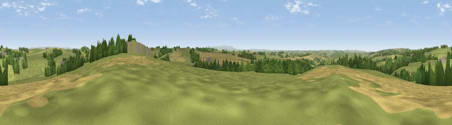

Viewpoint near Roborough
#22753 in England · top 43% of its area beats it · near RoboroughThe view, rendered

A 360° render of this exact spot computed from the terrain model, tree cover and land cover — summer colours, afternoon light, calibrated against photographs of famous viewpoints. Real trees, hedges and buildings will differ in detail.
The panorama
Grey silhouette: terrain skyline in each direction (720 bearings, Earth curvature and refraction included). Dashed green: skyline with trees (+15 m) and buildings (+8 m) as obstacles. Blue strip: how far the ground is visible on each bearing.
Where the view opens
Wedge length = distance to the farthest visible ground on that bearing (vegetation-aware). Rings at 10, 25 and 50 km.
What fills the view
67% grassland · 21% cropland · 11% woodland · 1% built-up
Angular shares of the visible panorama (visual magnitude), not map area. Landscape diversity 0.39 (0–1 Shannon).
Key numbers
More beautiful places nearby
The staircase of upgrades: each row has a higher view potential than everything closer. Driving times are estimates from straight-line distance, calibrated against real road routing — check an actual route before setting out.
| Place | Direction | Drive | Score |
|---|---|---|---|
| Viewpoint near Beaford | WSW · 3 km | ~8 min | 52.3 |
| Viewpoint near Kingscott | W · 4 km | ~10 min | 53.5 |
| Viewpoint near High Bickington | NE · 4 km | ~10 min | 57.7 |
| Viewpoint near High Bickington | NE · 5 km | ~11 min | 62.2 |
| Viewpoint near Burrington | E · 6 km | ~13 min | 66.4 |
| Viewpoint near High Bullen | NW · 6 km | ~13 min | 71.2 |
| Viewpoint near Alverdiscott | NW · 11 km | ~22 min | 71.7 |
| Codden Hill | N · 12 km | ~23 min | 81.3 |
50.93676, -4.03264 · source: screening · position refined by local search. Computed location — check access rights before visiting.